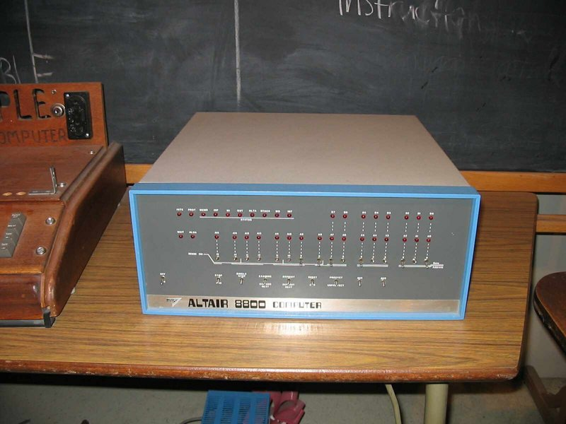
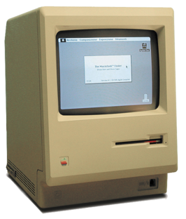

Silicon Valley
Home
Hall of Fame
Programming languages
Silicon valley
1939
HP 200A
Begin van Silicon Valley, het is begonnen met HP in de garage.
1975

Altair 8800
De Altair 8800 komt op de markt.
1967
Apple I
Steve Wiozniac en Steve Jobs presenteren Apple I op de HCC.
Er zijn 220 Apple I gemaakt, waarvan de waarde nu 600.000 dollar is.
1977
Apple II
Apple II wordt gepresenteerd.
1980
Apple IIc
Daniel Kottke maakt een draagbare Apple II in een koffer.
1981
MS-DOS
Microsoft bracht MS-DOS uit.
Na een deal met IBM nam Microsoft QDOS over en bracht het op iedere PC als licentie uit. Hiermee verdiende Microsoft miljoenen.
1984

Apple Macintosh
Lancering van de Macintosh.
Dit was de eerste computer uitgevoerd met een grafische interface.
1992
Windows 3.1
Lancering van Windows 3.1.
1995
Windows 95
Lancering van Windows 95 met het nummer Start Me Up van de Rolling Stones.
1997
Google LLC
Het bedrijf Google wordt opgericht door Harry Page en Sergey Brin.
De eerste Google Server werd gebouwd met Lego stenen.
2000
Wi-Fi
Wifi wordt ontwikkeld door John O'Sullivan.
2004
Facebook
Facebook wordt opgericht door Mark Zuckerberg.
2005
YouTube
Youtube wordt opgericht door Chad Hurley, Steve Chen en Jawed Karim.
2006
Twitter
Twitter wordt opgericht door Jack Dorsey.
2007
iPhone
iPhone wordt gepresenteerd.